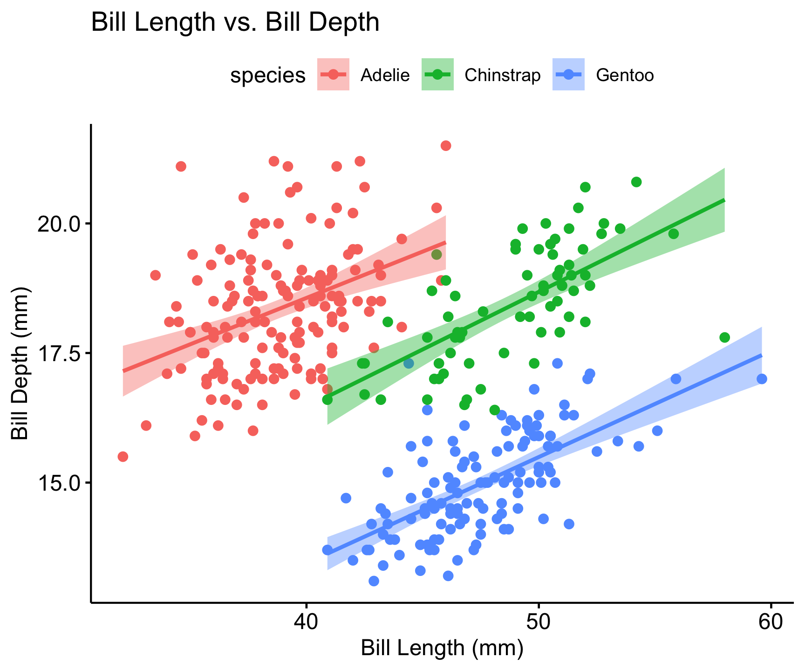
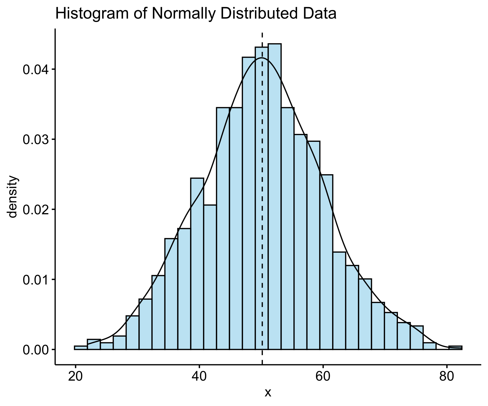
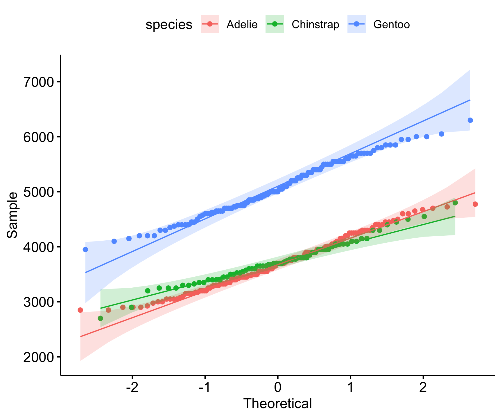
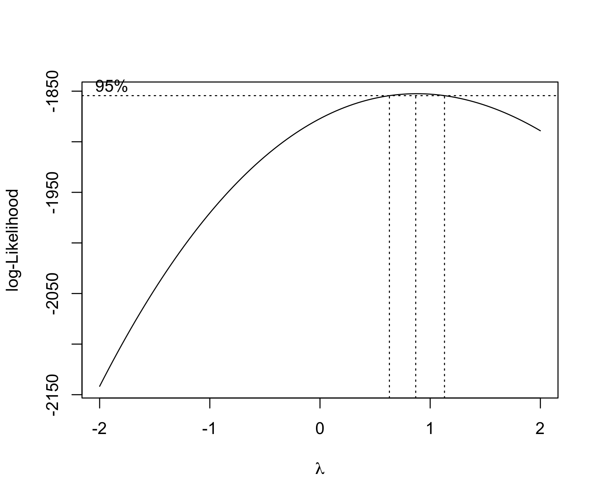

Lecture 11/12
EDA, Normality, Tidymodels
Your Tool Kit
readr: Importing datadplyr: Filter, select, mutate, summarize, grouping, and joiningtidyr: pivoting, nestingggplot2: Data visualizationbroom: Model tidyingpurrr: Functional programmingvisdat: Visualizing missing data
Introduction to EDA
Exploratory Data Analysis (EDA) helps understand data structure.
Key tasks:
- Summary statistics
- Visualizations
- Identifying trends and outliers
Much of what you have been doing thus far (states with most cases, trees that grow the fastest, rates/changes through time) are all parts of EDA.
Today we will focus on EDA from a statistical persepctive by focusing on aspects of the data needed to support the assumptions of models we might use (e.g.
lm)A large part of EDA is understanding the distribution of the data which is very visual.
We will use
ggpubr, a package that simplifiesggplot2-based plots to look at the properties descried.
Overview of ggpubr
ggpubris an R package designed to simplify data visualization usingggplot2.It provides an easy-to-use, publication-ready interface for creating common statistical plots with minimal coding.
Key Features of ggpubr
✅ Simplified Syntax
ggpubrwraps aroundggplot2functions, making it easier to generate high-quality plots without needing extensive ggplot2 knowledge.
✅ Common Statistical Plots
- Supports box plots, violin plots, scatter plots, bar plots, dot plots, and density plots.
✅ Built-in Statistical Analysis
✅ Easily adds statistical tests (e.g., t-tests, ANOVA) to plots with functions like
stat_compare_means().
Enhanced Customization
✅ Includes functions like
ggpar()to modify themes, labels, and legends.✅ Multiple Plot Arrangement
- Provides functions (
ggarrange(),ggexport()) to arrange multiple plots in a grid and export them conveniently.
- Provides functions (
✅ Correlation Analysis
- Functions like
ggscatter()integrate correlation coefficients and regression lines effortlessly.
- Functions like
✅ Facilitates Grouped Data Visualization
ggpubrmakes it easy to compare groups by adding p-values, confidence intervals, and other annotations.
Example Usage
Boxplot with Significance Testing
# Boxplot with p-values
ggboxplot(ToothGrowth, x = "supp", y = "len", color = "supp", palette = "jco") +
stat_compare_means(method = "t.test")
Scatter Plot with Regression Line
ggscatter(ToothGrowth, x = "dose", y = "len",
add = "reg.line", conf.int = TRUE,
cor.coef = TRUE, cor.method = "pearson",
color = "supp", palette = "jco")
Arranging Multiple Plots
ggarrange() to combine plots side by side.
p1 <- gghistogram(penguins, x = "body_mass_g", bins = 30, fill = "species")
p2 <- ggboxplot(penguins, x = "species", y = "body_mass_g", fill = "species")
ggarrange(p1, p2, ncol = 2, nrow = 2)
What is EDA?
Exploratory Data Analysis (EDA) is an approach to analyzing datasets to summarize their key characteristics.
It uses visualizations and statistical techniques to uncover patterns, anomalies, and relationships.
Helps in data cleaning, feature selection, and model choice.
- Helps formulate hypotheses and
- guides data preprocessing decisions.
Why is EDA Important?
✅ Detects data quality issues – Missing values, outliers, inconsistencies.
✅ Identifies patterns & trends – Helps understand distributions and relationships.
✅ Reduces bias & assumptions – Ensures models are based on well-understood data.
✅ Supports feature engineering – Helps select or create the best features for modeling.
✅ Guides modeling choices – Informs whether linear, nonlinear, or other methods are suitable.
EDA Checklist
In Exploratory data Analysis (2016) Peng usefully includes an EDA checklist:
1. Develop a question.
Usually we start EDA with a question that helps focus our interrogation.
We could ask, for example: “is there a relationship between car weight and miles per gallon in the mtcars dataset?”.
Questions beget questions; this one provides us with a starting point but will likely lead to other, more nuanced questions.
2. Read in your data and check the structure.
- Questions to ask:
- What are the dimensions of the data (rows, columns)?
- What are the variable types?
- Have character variables been coerced to factors? If so, is that appropriate?
- Which numeric variables are continuous, which are integers, and which are binary?
3. Summarize the data.
Use
summary()andtable(),vis_dat()and ask the following sorts of questions:- Are there missing observations?
- What is the range of the numeric variables?
- Do the ranges seem reasonable, or are there values that cause you to worry about data quality?
Where are the means and medians of each variable with respect to their minimums and maximums?
For factor and character variables: How many observations are there in each level or category?
If it wasn’t clear from examining the structure of the data: which variables are continuous, integer or binary?
Table the integer and binary variables: do the counts seem reasonable? If they don’t seem reasonable, then inspect the questionable rows.
4. Look at the top and the bottom of your data using head() and tail().
- This will give you a sense of the structure of the data and the type of variables you are dealing with.
- Be alert to structure and possible data problems or anomalies.
- Use
skimr::skim()to get a quick overview of the data structure and missing values.
5. Try to answer your question using descriptive measures.
- These can include evaluating distributions, central tendency and variaion.
6. Follow up with additional questions.
Key Steps in EDA
1️⃣ Understand Data Structure – Check types, dimensions, missing values. - glimpse(), str(), summary(), vis_dat()
2️⃣ Summary Statistics – Mean, median, variance, skewness, kurtosis. - skimr::skim(), summary(), table()
3️⃣ Visualizations – Histograms, box plots, scatter plots, correlation matrices. - ggplot2, ggpubr, ggcorrplot
4️⃣ Identify Data Issues – Outliers, missing data, inconsistencies. - vis_dat(), outliers::detect_outliers()
5️⃣ Transformations & Feature Engineering – Scaling, encoding, derived features. - recipes, tidymodels
Common Pitfalls in EDA
⚠ Ignoring domain context – Statistical insights must align with real-world meaning.
⚠ Over-reliance on visualizations – Needs statistical validation.
⚠ Dismissing small patterns – Some signals may be weak but significant.
⚠ Not documenting findings – EDA should inform later modeling stages.
Understanding Data Strucutre
Think back to early lectures…
- what is structure, diminsionality, and class of your dataset?
- (tibble/data.frame, matrix, vector, …)
- what are the types of variables?
- (lists, character, numeric, logical, …)
glimpse(penguins)
Rows: 344
Columns: 8
$ species <fct> Adelie, Adelie, Adelie, Adelie, Adelie, Adelie, Adel…
$ island <fct> Torgersen, Torgersen, Torgersen, Torgersen, Torgerse…
$ bill_length_mm <dbl> 39.1, 39.5, 40.3, NA, 36.7, 39.3, 38.9, 39.2, 34.1, …
$ bill_depth_mm <dbl> 18.7, 17.4, 18.0, NA, 19.3, 20.6, 17.8, 19.6, 18.1, …
$ flipper_length_mm <int> 181, 186, 195, NA, 193, 190, 181, 195, 193, 190, 186…
$ body_mass_g <int> 3750, 3800, 3250, NA, 3450, 3650, 3625, 4675, 3475, …
$ sex <fct> male, female, female, NA, female, male, female, male…
$ year <int> 2007, 2007, 2007, 2007, 2007, 2007, 2007, 2007, 2007…
nrow(penguins)
[1] 344Summary Stats
Descriptive Statistics: mean, median, mode, standard deviation.
skimris a great package for getting a quick overview of your data.It provides a summary of the data structure, missing values, and statistical summaries for each variable.
It’s a great first step in understanding your data.
library(skimr)
skimr::skim(penguins, body_mass_g)| Name | penguins |
| Number of rows | 344 |
| Number of columns | 8 |
| _______________________ | |
| Column type frequency: | |
| numeric | 1 |
| ________________________ | |
| Group variables | None |
Variable type: numeric
| skim_variable | n_missing | complete_rate | mean | sd | p0 | p25 | p50 | p75 | p100 | hist |
|---|---|---|---|---|---|---|---|---|---|---|
| body_mass_g | 2 | 0.99 | 4201.75 | 801.95 | 2700 | 3550 | 4050 | 4750 | 6300 | ▃▇▆▃▂ |
Central Tendency
- Measures of central tendency describe the center of a distribution.
- Common measures include mean, median, and mode.
- Mean: Average of all values. Best for symmetric distributions without outliers.
- Median : Middle value when data is sorted. Useful for skewed distributions and robust to outliers.
- Mode: Most frequent value. Useful for categorical data.
Variabilty
- Measures of variability describe the spread of data.
- Common measures include range, variance, standard deviation, and interquartile range (IQR).
- Range: Difference between the maximum and minimum values.
- Variance: Average of squared differences from the mean.
- Standard Deviation: Square root of variance. Measures spread around the mean.
- IQR: Range of the middle 50% of data. Robust to outliers.
Visualization
Univariate (histograms, box plots)
Bivariate (scatter plots, pair plots)
Multivariate (heatmaps, PCA)
Univariate Analysis – Distribution of Bill Length
- Univariate analysis focuses on a single variable at a time.
- Histograms are a common visualization for univariate analysis.
# Histogram of bill length
ggdensity(penguins, x = "bill_length_mm", add = "mean") +
labs(title = "Distribution of Bill Length", x = "Bill Length (mm)")
📌 Key Insights: Most bill lengths are between 35-55 mm. Some outliers exist.
Boxplot for Outlier Detection
- Boxplots are useful for visualizing the distribution of a variable by groups.
- They help identify outliers and compare distributions across categories.
- Outliers are points that fall outside the whiskers of the boxplot.
- Outliers may need further investigation.
# Boxplot of bill length by species
ggboxplot(penguins, x = "species", y = "bill_length_mm",
color = "species", palette = "jco") +
labs(title = "Bill Length Distribution by Species")📌 Key Insights:
- Different species have different bill length distributions.
- Outliers may need further investigation.
Bivariate Analysis – Bill Length vs. Depth
• Categorical + Categorical -> Bar Plot (stacked or side-by-side) • Categorical + Continuous -> Box Plot; Bar Plot (with summary statistics) • Continuous + Continuous -> Scatter Plots and Line Plots
- Bivariate analysis examines the relationship between two variables.
- Scatter plots are commonly used for bivariate analysis.
- Regression lines can show trends in the data.
# Scatter plot with regression line
ggscatter(penguins, x = "bill_length_mm", y = "bill_depth_mm",
color = "species", add = "reg.line", conf.int = TRUE) +
labs(title = "Bill Length vs. Bill Depth",
x = "Bill Length (mm)", y = "Bill Depth (mm)")
📌 Key Insights:
- Correlation between bill length and depth.
- Species exhibit different trends.
Multivariate Analysis
Grouping/Faceting (visualization techniques)
Summarizing data across features or groups
Clustering and PCA (analysis)
Reduce multidimensional data into smaller number of dimensions
ggscatter(penguins, x = "bill_length_mm", y = "bill_depth_mm",
color = "species", add = "reg.line", ellipse = TRUE, conf.int = TRUE) +
labs(title = "Bill Length vs. Bill Depth",
x = "Bill Length (mm)", y = "Bill Depth (mm)") +
facet_wrap(~species)
Correlation Analysis
- Correlation analysis measures the strength and direction of relationships between variables.
- Correlation coefficients range from -1 to 1.
- A value close to 1 indicates a strong positive correlation.
- A value close to -1 indicates a strong negative correlation.
- A value close to 0 indicates no correlation.
- Correlation does not imply causation.
- Correlation matrices are useful for visualizing multiple correlations.
penguins |>
select(where(is.numeric)) |>
vis_cor()
Identify Data Issues
Options for Duplicates:
- Remove exact duplicates when they don’t add information.
- Analyze near-duplicates to determine if they should be merged, retained, or removed.
df <- distinct(df)For Missing Data:
- Use imputation techniques (mean, median, mode, regression-based, or KNN imputation).
- Remove records if missing data is minimal and its removal won’t introduce bias.
- Use models that handle missing data natively (e.g.,
XGBoostcan handle missing values). - Properly handling duplicates and missing data improves model performance, reliability, and interpretability, ensuring that predictions are more accurate and generalizable.
## Removal
df <- drop_na(df)
# Imputation
df <- mutate(df, x = if_else(is.na(x), mean(x, na.rm = TRUE), x))Outlier Detection:
- IQR, Z-scores, clustering-based methods.
Data Normality
- all statistical tests and models rely on assumptions
- one of the most common assumptions is that data is normally distributed
What is the Central Limit Theorem?
The Central Limit Theorem (CLT) states that the sampling distribution of the sample mean approaches a normal distribution as the sample size increases, regardless of the original population distribution.
This is fundamental in statistics as it justifies using normal-based inference even when the data itself is not normally distributed.
Example: Uniform Distribution
What is happening?
- A uniform distribution is being used, meaning every value in [0,1] is equally likely.
- We take 10,000 random samples, each of size [n = 2], and compute the sample mean for each.
- The histogram visualizes the distribution of these means.
- Since n is small, the distribution still looks somewhat uniform.
set.seed(123) # For reproducibility
n <- 2 # Initial small sample size
sims <- 10000 # Number of samples
# This code generates a histogram of the sampling distribution of the mean
means <- replicate(sims, mean(runif(n)))
ggplot(data.frame(means), aes(x = means)) +
geom_histogram(binwidth = 0.05, fill = "steelblue", color = "black", alpha = 0.7) +
ggtitle(paste("Sampling Distribution of Mean (n =", n, ")")) +
theme_minimal()
Increasing Sample Size
- This time, we run the same simulation for three different sample sizes: n = 2, 5, 30.
- Each subplot shows the histogram of sample means for different n values.
- The red curve is the theoretical normal distribution (what we expect under the CLT).
- As n increases, the sample mean distribution becomes more normal, even though the original data was uniformly distributed.
n_values <- c(2, 5, 30)
par(mfrow = c(1, 3))
for (n in n_values) {
means <- replicate(sims, mean(runif(n)))
hist(means, breaks = 30, main = paste("n =", n), col = "lightblue", probability = TRUE)
curve(dnorm(x, mean = 0.5, sd = sqrt(1/12/n)), add = TRUE, col = "red", lwd = 2)
}
Understanding Data Normality
Data normality is a fundamental concept in statistics describing how data is distributed.
Many statistical tests assume normality because the normal distribution has well-defined properties that make inference more reliable.
The normal distribution, also known as the Gaussian distribution, is a symmetric, bell-shaped curve defined by two parameters:
Mean: The center of the distribution
Standard deviation: The measure of spread
Properties of a normal distribution:
Symmetric about the
meanFollows the empirical rule:
~68% of values fall within 1 standard deviation of the mean
~95% within 2 standard deviations
~99.7% within 3 standard deviations
# Generate a normal distribution and visualize it
set.seed(123)
data <- rnorm(1000, mean = 50, sd = 10)
Side note: Setting Seeds in R and Computer Science
Random number generation is crucial in simulations, resampling methods, and statistical modeling. However, to ensure reproducibility, we set a seed value.
Why set a seed?
Ensures that random number generation is consistent across runs.
Facilitates debugging and verification of statistical methods.
Allows for reproducibility in machine learning, Monte Carlo simulations, bootstrapping, and other applications.
set.seed(42) # Setting seed for reproducibility
sample1 <- rnorm(10)
set.seed(42)
sample2 <- rnorm(10)
set.seed(43)
sample3 <- rnorm(10)
identical(sample1, sample2)
[1] TRUE
identical(sample1, sample3)
[1] FALSEWhy Normality Matters
Many statistical techniques assume normality, including:
t-tests and ANOVA
- t-tests compare means of two groups.
- ANOVA compares means of multiple groups.
Linear regression (
lm)- Linear regression models assume normally distributed errors.
Principal Component Analysis (PCA)
- PCA assumes normally distributed data.
Confidence intervals
- Normality ensures accurate confidence interval estimation.
Parameter estimation: Many tests rely on normality for unbiased estimates.
Hypothesis testing: t-tests and ANOVA assume normality for accurate p-values.
Confidence intervals: Normality ensures accurate confidence interval estimation.
Regression models: Errors should be normally distributed for valid inference.
When data deviates from normality, these methods may produce inaccurate results.
Assessing Normality
Several methods can be used to check whether data is normally distributed:
Visual Methods
- Histogram: A bar plot of data frequencies can show the shape of the distribution.
- Boxplot: Identifies skewness and outliers.
gghistogram(data, y = "density",
bins = 30, fill = "skyblue",
add = "mean",
main = "Histogram of Normally Distributed Data",
color = "black", add_density = TRUE) 
ggboxplot(data, title = "Boxplot of Data", fill = "lightgreen")Checking Normality with Q-Q Plots
- A Q-Q plot (quantile-quantile plot) is used to compare the distribution of a dataset to a normal distribution.
- If the points lie approximately along the 45-degree line, the data is normally distributed.
ggqqplot(group_by(penguins, species), x = 'body_mass_g', color = "species") 
- Interpretation:
- Deviations from the line suggest skewness or outliers.
- Can help assess whether transformations (e.g., log transformation) are needed.
Statistical Tests
Each test has a null hypothesis (H₀) that the data follows a normal distribution. A low p-value (typically < 0.05) suggests rejecting H₀, meaning the data is likely not normal.
| Test | Null Hypothesis (H₀) | Strengths | Weaknesses |
|---|---|---|---|
| Shapiro-Wilk | Data is normally distributed | Highly sensitive to departures from normality; good for small samples | Too sensitive for large samples |
| Kolmogorov-Smirnov (K-S) | Data follows a normal distribution | Works for any sample size; compares empirical and theoretical distributions | Less powerful for small samples; sensitive to sample size |
| Anderson-Darling | Data follows a normal distribution | More emphasis on tails, robust for detecting deviations there | Sensitive to sample size |
| Lilliefors | Data follows a normal distribution | Adjusts for estimated parameters; useful for small samples | Less common, still sensitive to sample size |
| Jarque-Bera | Data follows a normal distribution | Detects skewness and kurtosis deviations | Less reliable for small samples |
Examples:
# Shapiro Wilks Test
shapiro.test(data)
Shapiro-Wilk normality test
data: data
W = 0.99838, p-value = 0.4765. . .
# Kolmogorov-Smirnov Test
ks.test(data, "pnorm", mean = mean(data), sd = sd(data))
Asymptotic one-sample Kolmogorov-Smirnov test
data: data
D = 0.014963, p-value = 0.9786
alternative hypothesis: two-sided. . .
library(nortest)
ad.test(data)
Anderson-Darling normality test
data: data
A = 0.29653, p-value = 0.592. . .
library(tseries)
jarque.bera.test(data)
Jarque Bera Test
data: data
X-squared = 0.94028, df = 2, p-value = 0.6249nest/map Examples:
penguins |>
drop_na() |>
nest(data = -species) |>
mutate(test = map(data, ~shapiro.test(.x$body_mass_g)),
glance_shapiro = map(test, broom::glance)) %>%
unnest(glance_shapiro)
# A tibble: 3 × 6
species data test statistic p.value method
<fct> <list> <list> <dbl> <dbl> <chr>
1 Adelie <tibble [146 × 7]> <htest> 0.981 0.0423 Shapiro-Wilk normality…
2 Gentoo <tibble [119 × 7]> <htest> 0.986 0.261 Shapiro-Wilk normality…
3 Chinstrap <tibble [68 × 7]> <htest> 0.984 0.561 Shapiro-Wilk normality…Dealing with Non-Normal Data
If data is not normally distributed, there are several approaches:
Option 1: Transformation:
Apply transformations such as:
Log transformation (useful for right-skewed data)
Square root transformation
Box-Cox transformation
Exponential Transformation: Raising values to a power greater than 1.
Reflection and Log Transformation: If data has negative values, reflect it by subtracting from a constant before applying log transformation.
When to Use Different Transformations:
| Transformation | When to Use |
|---|---|
| Log | Right-skewed data, positive values only |
| Square Root | Moderate right-skew, count data |
| Box-Cox | Unknown transformation type needed |
| Exponential | Left-skewed data |
| Reflection Log | Left-skewed data with negative values |
Examples
# Log Transformation
log_data <- log(data)
#Sqrt Transformation
sqrt_data <- sqrt(data)
# Box-Cox Transformation
library(MASS)
bc <- boxcox(lm(data ~ 1), lambda = seq(-2, 2, by = 0.1))
# Exponential Transformation
exp_data <- data^2
# Reflection and Log Transformation
reflected_data <- max(data) - data + 1
log_transformed <- log(reflected_data)Option 2: Nonparametric Methods
Nonparametric methods are useful in environmental science due to the prevalence of skewed, censored, or ordinal data.
They are often used in place of parametric tests when data is not normally distributed.
Some common applications include:
- Mann-Whitney/Wilcoxon test (instead of t-test): Compares two groups when data is not normally distributed.
wilcox.test(Ozone ~ Month, data = airquality, subset = Month %in% c(5, 8))
Wilcoxon rank sum test with continuity correction
data: Ozone by Month
W = 127.5, p-value = 0.0001208
alternative hypothesis: true location shift is not equal to 0- Kruskal-Wallis Test (instead of ANOVA): Compares multiple groups when data is not normally distributed.
kruskal.test(Ozone ~ Month, data = airquality)
Kruskal-Wallis rank sum test
data: Ozone by Month
Kruskal-Wallis chi-squared = 29.267, df = 4, p-value = 6.901e-06- Spearman’s Rank Correlation: Measures the strength and direction of a relationship between two variables when data is not normally distributed or is measured on an ordinal scale.
cor.test(airquality$Ozone, airquality$Temp, method = "spearman")
Spearman's rank correlation rho
data: airquality$Ozone and airquality$Temp
S = 58778, p-value < 2.2e-16
alternative hypothesis: true rho is not equal to 0
sample estimates:
rho
0.774043 Option 3: Resampling Methods:
Bootstrapping can provide robust estimates without assuming normality.
library(boot)
boot_mean <- function(data, indices) {
return(mean(data[indices]))
}
results <- boot(data, boot_mean, R = 1000)
plot(results)
What is Skewness?
Skewness measures the asymmetry of a data distribution.
Positive Skew: Tail on the right (longer right tail)
Negative Skew: Tail on the left (longer left tail)
Symmetric: No skew (bell-shaped, normal distribution)

Why Assess Skewness?
Helps determine data transformation needs.
Impacts statistical analysis (e.g., normality assumptions in regression, t-tests).
Influences interpretation of summary statistics like mean and median.
Methods to Assess Skewness in R
1. Descriptive Statistics:
moments::skewness()/moments::agostino.test()The null hypothesis (H₀) states that the data is symmetrically distributed (i.e., skewness = 0).
The alternative hypothesis (H₁) states that the data is not symmetrically distributed (i.e., skewness ≠ 0).
A statistical test for skewness can be performed using the D’Agostino test in R:
moments::agostino.test(na.omit(penguins$body_mass_g))
D'Agostino skewness test
data: na.omit(penguins$body_mass_g)
skew = 0.46826, z = 3.44537, p-value = 0.0005703
alternative hypothesis: data have a skewnessMethods to Assess Skewness in R
2. Visualizations:
- Histograms / Density Plots
- Right-skewed: Tail extends to the right.
- Left-skewed: Tail extends to the left.
- Symmetric: Roughly bell-shaped.
- Boxplots
- Right-skewed: Longer right whisker, median closer to Q1.
- Left-skewed: Longer left whisker, median closer to Q3.
- Q-Q Plots
- If points deviate from the 45-degree line, the data is skewed.
- Right-skewed: Points curve above the line.
- Left-skewed: Points curve below the line.
- If points deviate from the 45-degree line, the data is skewed.
Conclusion
Understanding data normality is crucial for selecting appropriate statistical methods.
While many statistical techniques assume normality, alternative approaches exist for non-normal data.
By visually inspecting and statistically testing for normality, analysts can make informed decisions on how to proceed with their data analysis.
Transformations, nonparametric methods, and resampling techniques are valuable tools for handling non-normal data and ensuring robust statistical inference.
Tidymodels
Where are we going …
So far you have:
- imported data
- manipulated data to add, summarize, and enhance information
- Performed key data science applications/queries
- learned grouping techniques to summarize data
- learned to pivot data for different applications
- visualized data
- learned to implment a linear model
- learned to nest/map/unnest data for complex operations
- learned to check for normality, transform data, and perform non-parametric tests
With all of this:
- We are ready to move into more intensive modeling applications
- We will start with
tidymodelswhich is a suite of packages that provide a consistent, organized approach to modeling in R.
- To dip our toes into this framework we will start with data normalization, a key step in preprocessing data for machine learning.
What is tidymodels?
- An R package ecosystem for modeling and machine learning
- Built on the
tidyverseprinciples (consistent syntax, modular design) - Provides a structured workflow for preprocessing, model fitting, and evaluation
- Includes packages for model specification, preprocessing, resampling, tuning, and evaluation
- Promotes best practices for reproducibility and efficiency
- Offers a unified interface for different models and tasks
Key tidymodels Packages
📦 recipes: Feature engineering and preprocessing
📦 parsnip: Unified interface for model specification
📦 workflows: Streamlined modeling pipelines
📦 tune: Hyperparameter tuning
📦 rsample: Resampling and validation
📦 yardstick: Model evaluation metrics
knitr::include_graphics('images/tidymodels-packages.png')
tidymodels::tidymodels_packages()
[1] "broom" "cli" "conflicted" "dials" "dplyr"
[6] "ggplot2" "hardhat" "infer" "modeldata" "parsnip"
[11] "purrr" "recipes" "rlang" "rsample" "rstudioapi"
[16] "tibble" "tidyr" "tune" "workflows" "workflowsets"
[21] "yardstick" "tidymodels" Typcical Workflow in tidymodels
1️⃣ Load Package & Data
2️⃣ Preprocess Data (recipes)
3️⃣ Define Model (parsnip)
4️⃣ Create a Workflow (workflows)
5️⃣ Train & Tune (tune)
6️⃣ Evaluate Performance (yardstick)
Data Normalization: tidymodels
Data normalization is a crucial step in data preprocessing for machine learning.
It ensures that features contribute equally to model performance by transforming them into a common scale.
This is particularly important for algorithms that rely on distance metrics (e.g., k-nearest neighbors, support vector machines) or gradient-based optimization (e.g., neural networks, logistic regression).
In the
tidymodelsframework, data normalization is handled within preprocessing workflows using therecipespackage, which provides a structured way to apply transformations consistently.
Why Normalize Data for ML?
✅ Improves Model Convergence: Many machine learning models rely on gradient descent, which can be inefficient if features are on different scales.
✅ Prevents Feature Domination: Features with large magnitudes can overshadow smaller ones, leading to biased models.
✅ Enhances Interpretability: Standardized data improves comparisons across variables and aids in better model understanding.
✅ Facilitates Distance-Based Methods: Algorithms like k-nearest neighbors and principal component analysis (PCA) perform best when data is normalized.
Common Normalization Techniques
1. Min-Max Scaling
Transforms data into a fixed range (typically [0,1]).
Preserves relationships but sensitive to outliers.
Formula: \[ x' = \frac{x - x_{min}}{x_{max} - x_{min}} \]
Implemented using
step_range()inrecipes.
2. Z-Score Standardization (Standard Scaling)
Centers data to have zero mean and unit variance.
More robust to outliers compared to min-max scaling.
Formula: \[ x' = \frac{x - \mu}{\sigma} \]
Implemented using
step_normalize()inrecipes.
Common Normalization Techniques
3. Robust Scaling
Uses median and interquartile range (IQR) for scaling.
Less sensitive to outliers.
Formula: \[ x' = \frac{x - median(x)}{IQR(x)} \]
Implemented using
step_YeoJohnson()orstep_BoxCox()inrecipes.
4. Log Transformation
Useful for skewed distributions to reduce the impact of extreme values.
Implemented using
step_log()inrecipes.
Common Normalization Techniques
5. Principal Component Analysis (PCA)
Projects data into a lower-dimensional space while maintaining variance.
Used in high-dimensional datasets.
Implemented using
step_pca()in recipes.
Other Feature Engineering Tasks
Handling Missing Data
step_impute_mean()step_impute_median()step_impute_knn()
can be used to fill missing values.
Encoding Categorical Variables
step_dummy()creates dummy variables for categorical features.step_other()groups infrequent categories into an “other” category.
Creating Interaction Terms
step_interact()generates interaction terms between predictors.
Feature Extraction
step_pca()orstep_ica()can be used to extract important components.
Text Feature Engineering
step_tokenize(), step_stopwords(), and step_tf() for text processing.
Binning Numerical Data
step_bin2factor() converts continuous variables into categorical bins.
Polynomial and Spline Features
step_poly() and step_bs() for generating polynomial and spline transformations.
Implementing Normalization in Tidymodels
What will we do?
We will create a recipe to normalize the numerical predictors in the
penguinsdataset using therecipespackage.We will then prepare (
prep) the recipe and apply it to the dataset to obtain normalized data.We will then
bakethe recipe to apply the transformations to the dataset.Once processed, we can implement a linear regression model using the normalized data.
. . .
Example Workflow
library(tidymodels)
(recipe_obj <- recipe(flipper_length_mm ~
bill_length_mm + body_mass_g +
sex + island + species,
data = penguins) |>
step_impute_mean(all_numeric_predictors()) |>
step_dummy(all_factor_predictors()) |>
step_normalize(all_numeric_predictors()))
# Prepare and apply transformations
prep_recipe <- prep(recipe_obj, training = penguins)
normalized_data <- bake(prep_recipe, new_data = NULL) |>
mutate(species = penguins$species) |>
drop_na()
head(normalized_data)
# A tibble: 6 × 9
bill_length_mm body_mass_g flipper_length_mm sex_male island_Dream
<dbl> <dbl> <int> <dbl> <dbl>
1 -0.886 -0.565 181 0.990 -0.750
2 -0.812 -0.502 186 -1.01 -0.750
3 -0.665 -1.19 195 -1.01 -0.750
4 -1.33 -0.940 193 -1.01 -0.750
5 -0.849 -0.690 190 0.990 -0.750
6 -0.923 -0.721 181 -1.01 -0.750
# ℹ 4 more variables: island_Torgersen <dbl>, species_Chinstrap <dbl>,
# species_Gentoo <dbl>, species <fct>Explanation:
recipe()defines preprocessing steps for modeling.step_impute_mean(all_numeric_predictors())standardizes all numerical predictors.step_dummy(all_factor_predictors())creates dummy variables for categorical predictors.step_normalize(all_numeric_predictors()))standardizes all numerical predictors.prep()estimates parameters for transformations.bake()applies the transformations to the dataset.
Build a model with Normalized Data
(model = lm(flipper_length_mm ~ . , data = normalized_data) )
Call:
lm(formula = flipper_length_mm ~ ., data = normalized_data)
Coefficients:
(Intercept) bill_length_mm body_mass_g sex_male
200.9649 2.2754 4.6414 0.7208
island_Dream island_Torgersen species_Chinstrap species_Gentoo
0.6525 0.9800 0.5640 8.0796
speciesChinstrap speciesGentoo
NA NA Build a model with Normalized Data
(model = lm(flipper_length_mm ~ . , data = normalized_data) )
glance(model)
Call:
lm(formula = flipper_length_mm ~ ., data = normalized_data)
Coefficients:
(Intercept) bill_length_mm body_mass_g sex_male
200.9649 2.2754 4.6414 0.7208
island_Dream island_Torgersen species_Chinstrap species_Gentoo
0.6525 0.9800 0.5640 8.0796
speciesChinstrap speciesGentoo
NA NA
# A tibble: 1 × 12
r.squared adj.r.squared sigma statistic p.value df logLik AIC BIC
<dbl> <dbl> <dbl> <dbl> <dbl> <dbl> <dbl> <dbl> <dbl>
1 0.863 0.861 5.23 294. 2.15e-136 7 -1020. 2057. 2092.
# ℹ 3 more variables: deviance <dbl>, df.residual <int>, nobs <int>Build a model with Normalized Data
(model = lm(flipper_length_mm ~ . , data = normalized_data) )
glance(model)
(pred <- augment(model, normalized_data))
Call:
lm(formula = flipper_length_mm ~ ., data = normalized_data)
Coefficients:
(Intercept) bill_length_mm body_mass_g sex_male
200.9649 2.2754 4.6414 0.7208
island_Dream island_Torgersen species_Chinstrap species_Gentoo
0.6525 0.9800 0.5640 8.0796
speciesChinstrap speciesGentoo
NA NA
# A tibble: 1 × 12
r.squared adj.r.squared sigma statistic p.value df logLik AIC BIC
<dbl> <dbl> <dbl> <dbl> <dbl> <dbl> <dbl> <dbl> <dbl>
1 0.863 0.861 5.23 294. 2.15e-136 7 -1020. 2057. 2092.
# ℹ 3 more variables: deviance <dbl>, df.residual <int>, nobs <int>
# A tibble: 333 × 15
bill_length_mm body_mass_g flipper_length_mm sex_male island_Dream
<dbl> <dbl> <int> <dbl> <dbl>
1 -0.886 -0.565 181 0.990 -0.750
2 -0.812 -0.502 186 -1.01 -0.750
3 -0.665 -1.19 195 -1.01 -0.750
4 -1.33 -0.940 193 -1.01 -0.750
5 -0.849 -0.690 190 0.990 -0.750
6 -0.923 -0.721 181 -1.01 -0.750
7 -0.867 0.592 195 0.990 -0.750
8 -0.518 -1.25 182 -1.01 -0.750
9 -0.978 -0.502 191 0.990 -0.750
10 -1.71 0.248 198 0.990 -0.750
# ℹ 323 more rows
# ℹ 10 more variables: island_Torgersen <dbl>, species_Chinstrap <dbl>,
# species_Gentoo <dbl>, species <fct>, .fitted <dbl>, .resid <dbl>,
# .hat <dbl>, .sigma <dbl>, .cooksd <dbl>, .std.resid <dbl>Build a model with Normalized Data
(model = lm(flipper_length_mm ~ . , data = normalized_data) )
glance(model)
(pred <- augment(model, normalized_data))
ggscatter(pred,
x = 'flipper_length_mm', y = '.fitted',
add = "reg.line", conf.int = TRUE,
cor.coef = TRUE, cor.method = "pearson",
color = "species", palette = "jco")
Call:
lm(formula = flipper_length_mm ~ ., data = normalized_data)
Coefficients:
(Intercept) bill_length_mm body_mass_g sex_male
200.9649 2.2754 4.6414 0.7208
island_Dream island_Torgersen species_Chinstrap species_Gentoo
0.6525 0.9800 0.5640 8.0796
speciesChinstrap speciesGentoo
NA NA
# A tibble: 1 × 12
r.squared adj.r.squared sigma statistic p.value df logLik AIC BIC
<dbl> <dbl> <dbl> <dbl> <dbl> <dbl> <dbl> <dbl> <dbl>
1 0.863 0.861 5.23 294. 2.15e-136 7 -1020. 2057. 2092.
# ℹ 3 more variables: deviance <dbl>, df.residual <int>, nobs <int>
# A tibble: 333 × 15
bill_length_mm body_mass_g flipper_length_mm sex_male island_Dream
<dbl> <dbl> <int> <dbl> <dbl>
1 -0.886 -0.565 181 0.990 -0.750
2 -0.812 -0.502 186 -1.01 -0.750
3 -0.665 -1.19 195 -1.01 -0.750
4 -1.33 -0.940 193 -1.01 -0.750
5 -0.849 -0.690 190 0.990 -0.750
6 -0.923 -0.721 181 -1.01 -0.750
7 -0.867 0.592 195 0.990 -0.750
8 -0.518 -1.25 182 -1.01 -0.750
9 -0.978 -0.502 191 0.990 -0.750
10 -1.71 0.248 198 0.990 -0.750
# ℹ 323 more rows
# ℹ 10 more variables: island_Torgersen <dbl>, species_Chinstrap <dbl>,
# species_Gentoo <dbl>, species <fct>, .fitted <dbl>, .resid <dbl>,
# .hat <dbl>, .sigma <dbl>, .cooksd <dbl>, .std.resid <dbl>
Conclusion
Data normalization is a critical step for ensuring model efficiency, fairness, and accuracy.
The tidymodels framework, through recipes, provides a systematic approach to normalization, enabling reproducible and scalable workflows. Choosing the right normalization technique depends on the data characteristics and the machine learning algorithm being used.
Beyond normalization,
tidymodelsoffers a variety of feature engineering techniques that enhance model performance by improving data representation and extracting valuable information.More on that to come!
Assignment:
Exploratory Data Analysis and Linear Regression in R
In this assignment, you will again analyze the airquality dataset using various statistical tests, data transformation techniques, and regression modeling. Follow the step-by-step guiding questions to complete the analysis in a qmd.
Part 1: Normality Testing
Load the airquality dataset in R. What does this dataset represent? Explore its structure using functions like
str()andsummary().Perform a Shapiro-Wilk normality test on the following variables:
Ozone,Temp,Solar.R, andWind.What is the purpose of the Shapiro-Wilk test?
What are the null and alternative hypotheses for this test?
Interpret the p-values. Are these variables normally distributed?
Part 2: Data Transformation and Feature Engineering
Create a new column with
case_whentranlating the Months into four seasons (Winter (Nov, Dec, Jan), Spring (Feb, Mar, Apr), Summer (May, Jun, Jul), and Fall (Aug, Sep, Oct)).Use
tableto figure out how many observations we have from each season.
Part 3: Data Preprocessing
Normalize the predictor variables (Temp, Solar.R, Wind, and Season) using a
recipeWhat is the purpose of normalizing data?
What function can be used to impute missing values with the mean?
prepandbakethe data to generate a processed dataset.Why is it necessary to both
prep()andbake()the recipe?
Part 4: Building a Linear Regression Model
Fit a linear model using Ozone as the response variable and all other variables as predictors. Remeber that the
.notation can we used to include all variables.Interpret the model summary output (coefficients, R-squared, p-values) in plain language
Part 5: Model Diagnostics
Use
broom::augmentto suppliment the normalizeddata.framewith the fitted values and residuals.Extract the residuals and visualize their distribution as a histogram and qqplot.
Use
ggarangeto plot this as one image and interpret what you see in them.Create a scatter plot of actual vs. predicted values using ggpubr with the following setting:
ggscatter(a, x = "Ozone", y = ".fitted",
add = "reg.line", conf.int = TRUE,
cor.coef = TRUE, cor.method = "spearman",
ellipse = TRUE)How strong of a model do you think this is?
Render your document to HTML and submit to Canvas. Be sure to include this in your document yml:
format:
html:
self-contained: true